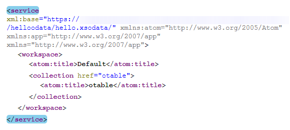

Tutorial: Use the SAP HANA OData Interface
In this tutorial, you create a simple OData service that exposes a SAP HANA database table as an OData collection so that it can be analyzed and displayed by client applications.
Prerequisites
You have the privileges granted by the role sap.hana.ide.roles::EditorDeveloper; this role is included in the parent role sap.hana.ide.roles::Developer.
Context
SAP HANA Extended Application Services allows you to create OData services without needing to perform server side coding. To create an OData service from an existing HANA table (or view), you define a service definition file with the suffix .xsodata.
Procedure
-
Create a schema, for example, HELLO_ODATA.hdbschema.
The schema is required for the table that contains the data to be exposed by your OData service definition. The schema is defined in a flat file with the file extension .hdbschema.
-
Select the helloodata package and from the context menu choose
 New
New  File
File  .
.
-
Select the helloodata package and from the context menu choose
-
Create the database table that contains the data to be exposed by your OData service
definition, for example, otable.hdbtable.
-
Select the helloodata package and from the context menu choose New File .
-
Select the helloodata package and from the context menu choose
-
Assign schema execution authorization to your user.
After activation in the repository, a schema object is only visible in the catalog to the _SYS_REPO user. To enable other users, for example the schema owner, to view the newly created schema and the objects it contains, you must grant the user the required SELECT privilege for the schema object.To grant schema privileges to yourself:
-
Choose
 (Assign execution authorization).
You are assigned the requested schema privileges (by default, EXECUTE, SELECT, INSERT, UPDATE, and DELETE).
(Assign execution authorization).
You are assigned the requested schema privileges (by default, EXECUTE, SELECT, INSERT, UPDATE, and DELETE).
-
Choose
-
Create an OData service-definition file.
The OData service-definition file has the file extension .xsodata, for example, hello.xsodata and must be located in the root package of the OData application:
-
Select the helloodata package and from the context menu choose New File .
-
Select the helloodata package and from the context menu choose
-
To test the new OData service, select the hello.xsodata file and
choose
 (Run).
The root URI of the OData service is passed to a new browser tab and an HTTP request executed.The correctly addressed URI returns the list of resources exposed by the OData service, as shown below. In this example, an entity set otable has been created for the table defined in the hdbtable file helloodata:otable.hdbtable. The default name of the entity set is the name of the repository object file, here "otable":
(Run).
The root URI of the OData service is passed to a new browser tab and an HTTP request executed.The correctly addressed URI returns the list of resources exposed by the OData service, as shown below. In this example, an entity set otable has been created for the table defined in the hdbtable file helloodata:otable.hdbtable. The default name of the entity set is the name of the repository object file, here "otable":
NoteYou can view the same output as above in JSON format by appending the parameter format=json to the URL: hello.xsodata/?$format=json
The JSON output would then be:{ "d": { "EntitySets": ["otable"] } }